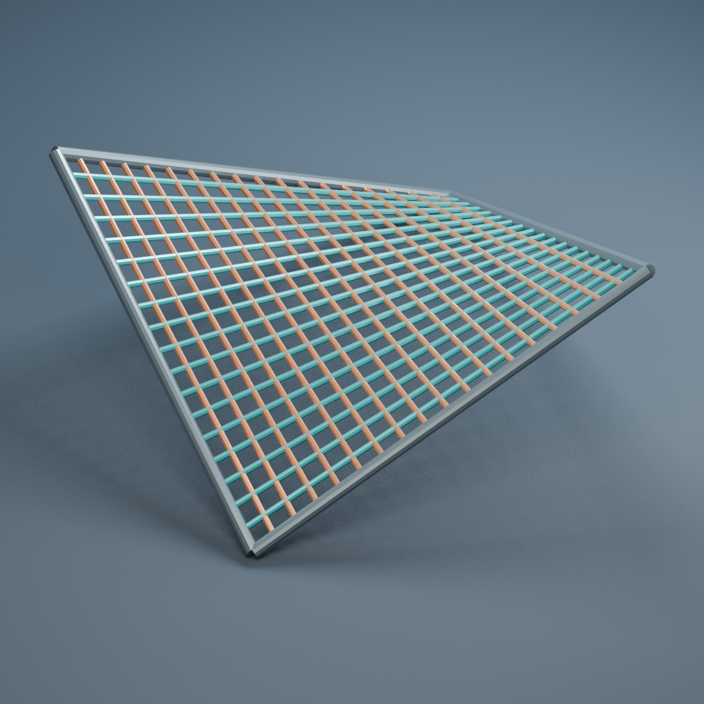

02 string saddle
A string-saddle form study for exploring ruled surfaces and procedural repetition.
Quality rating
Evidence completeness: 80/100. No verified numeric visual match attached to this exact source. Engineering accuracy, simulation correctness and manufacturability are not certified.
Source
02_string_saddle.p3d · 981 bytes
ebabb5291e3d9eed3e1c7e50662d79277d7b581cDesign and grammar usage
Open the grammar in the ProGen3D desktop editor using File → Open (Ctrl+O). Regenerate the scene, fit the preview extents, and inspect front, right, top and isometric views. For dependencies or project-specific resources use the original repository path at the recorded commit; copying only the grammar is not a guarantee of standalone operation.
Sample renders



Documentation and evidence
Provenance
Source commit 95c61f312c8bbfe5489b312beee569f437f075e9. Exact duplicates are represented by one catalogue entry; original paths remain accessible.